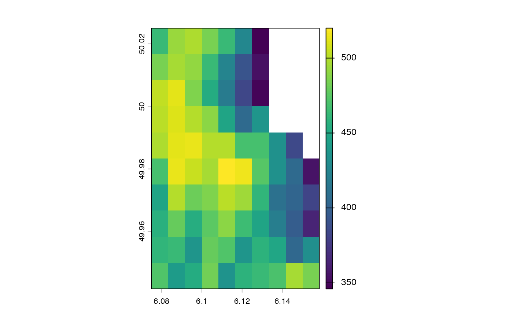

Get specific tile(s) from the data based on a tile* object. Indexing via
i and j params is used to select the tile(s) to get, in a manner similar
to [ extraction of bounds from tile* objects.
All params are usable with any method except when otherwise stated.
This generic handles data/tile* object interactions. For simple selection
of data based on a set of bounds, see the low-level generic getBoundedData().
The character method only works for filetypes readable by {terra}.
New x data types should automatically work with this generic as long as a
getBoundedData() method is created for it. A specific getTile() method
is only needed if additional params/operations should be performed before
the tile selection, (for example layer selection with raster data).
# S4 method for class 'token,tilePlan'
getTile(x, tiles, ...)
# S4 method for class 'ANY,tilePlan'
getTile(x, tiles, i = NULL, j, pad = NULL, sel_params = list(), ...)
# S4 method for class 'character,tilePlan'
getTile(x, tiles, prefer = NULL, ext = NULL, ...)
# S4 method for class 'SpatRaster,tilePlan'
getTile(x, tiles, lyr = NULL, extend = FALSE, fill = NA, ...)
# S4 method for class 'SpatRaster,pointTilePlan'
getTile(x, tiles, lyr = NULL, extend = FALSE, fill = NA, ...)
# S4 method for class 'ANY,tileGroup'
getTile(x, tiles, i, j, ...)
# S4 method for class 'ANY,tileIterator'
getTile(x, tiles, advance = TRUE, ...)data
tile* object
additional params to pass to [ tilePlan indexing
ANY except tileIterator tile vector index or row index if j is also provided
ANY except tileIterator tile col index
(optional) additional padding to apply before tile retrieval.
Useful for temporarily increasing padding without affecting tile* object.
list of named params to pass to the tile [ selection call.
Rarely needed; covers internal [ options such as expand_grid.
character filepath only character. Hint for file reading
("raster" or "vector"). If provided, skips automatic type detection.
SpatRaster or raster filepath (character) only numeric
or SpatExtent (optional) Set an extent before extracting tiles from raster.
SpatRaster only if provided, which layers/channels to include
pixelTilePlan only logical (default = FALSE). Whether to
extend tile data to reach expected tile dimensions
pixelTilePlan only numeric. if extend = TRUE, what value to
fill with
tileIterator only logical (default = TRUE). Whether to
advance the iterator.
list of tile data
Other tile processing:
getBoundedData(),
tileApply(),
tileApply-group,
tileApply-iterator,
tileApply-plan
f <- system.file("ex/elev.tif", package = "terra")
r <- terra::rast(f)
tp <- tilePlan("pixel")
tp$pxdims <- dim(r)[1:2]
tp$nrows <- 10
tp$ncols <- 10
# get tiles from specific array grid indices.
tile_list <- getTile(f, tp, i = 3, j = 5)
force(tile_list)
#> [[1]]
#> class : SpatRaster
#> size : 10, 10, 1 (nrow, ncol, nlyr)
#> resolution : 0.008333333, 0.008333333 (x, y)
#> extent : 6.075, 6.158333, 49.94167, 50.025 (xmin, xmax, ymin, ymax)
#> coord. ref. : lon/lat WGS 84 (EPSG:4326)
#> source(s) : memory
#> varname : elev
#> name : elevation
#> min value : 346
#> max value : 520
#>
plot(tile_list[[1]])

# get tiles via iteration
iter <- tileIterator(tp, batch_size = 3)
b1 <- getTile(r, iter) # get first batch of 3...
b2 <- getTile(r, iter) # get second batch of 3...